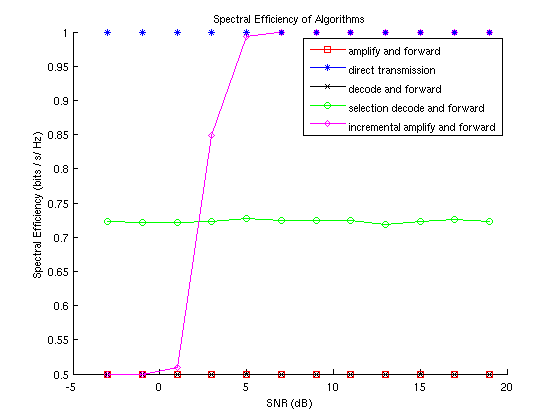
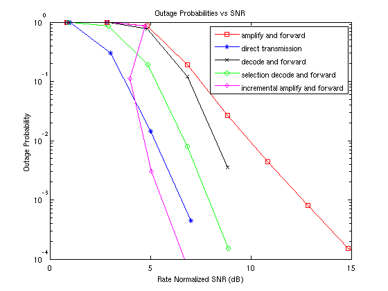

clc, clear, close all;
numbits = 1024;
numtrials = 1E1;
M = 4;
k = log2(M);
P = 10;
snrD = -3:2:20;
snrR = snrD;
r = 25;
W = 100;
R = k*(2*r)/W;
outageBitThreshold = numbits*0.15;
symbolPeriod = 1E-2;
coherenceTime = 1;
dopplerShift = 1/coherenceTime;
outageResults = struct(...
'direct', zeros(1,length(snrD)),...
'amplify', zeros(1,length(snrD)),...
'decode', zeros(1,length(snrD)),...
'selection', zeros(1,length(snrD)),...
'incremental', zeros(1,length(snrD))...
);
bigR = struct(...
'direct', zeros(1,length(snrD)),...
'amplify', zeros(1,length(snrD)),...
'decode', zeros(1,length(snrD)),...
'selection', zeros(1,length(snrD)),...
'incremental', zeros(1,length(snrD))...
);
snrDnorm = struct(...
'direct', zeros(1,length(snrD)),...
'amplify', zeros(1,length(snrD)),...
'decode', zeros(1,length(snrD)),...
'selection', zeros(1,length(snrD)),...
'incremental', zeros(1,length(snrD))...
);
channelSD = rayleighchan(symbolPeriod,dopplerShift);
channelSD.StorePathGains = true;
channelSR = rayleighchan(symbolPeriod,dopplerShift);
channelSR.StorePathGains = true;
channelRD = rayleighchan(symbolPeriod,dopplerShift);
channelRD.StorePathGains = true;
tic;
h = waitbar(0,'wait!');
for ii = 1:length(snrD)
for jj = 1:numtrials
bits = randi([0,1],1,numbits);
msg = bi2de(reshape(bits,k,size(bits,2)/k).','left-msb')';
x = qammod(msg,M);
x = x*sqrt(P) / std(x);
xSD = filter(channelSD,x);
xSR = filter(channelSR,x);
xSDn = awgn(xSD,snrD(ii),'measured');
xSRn = awgn(xSR,snrR(ii),'measured');
dirResult = directTransmission(bits,x,xSDn,snrD(ii),P,M,channelSD,outageBitThreshold);
ampResult = amplifyAndForward(bits,x,xSDn,xSRn,snrD(ii),snrR(ii),P,M,channelSD,channelSR,channelRD,outageBitThreshold);
decResult = decodeAndForward(bits,x,xSDn,xSRn,snrD(ii),snrR(ii),P,M,channelSD,channelSR,channelRD,outageBitThreshold);
[secResult,secRate] = selectionDecodeAndForward(bits,x,xSDn,xSRn,snrD(ii),snrR(ii),P,M,channelSD,channelSR,channelRD,outageBitThreshold,R);
[incResult,incRate] = incrementalAmplifyAndForward(bits,x,xSDn,xSRn,snrD(ii),snrR(ii),P,M,channelSD,channelSR,channelRD,outageBitThreshold,R);
outageResults.direct(ii) = outageResults.direct(ii) + dirResult;
outageResults.amplify(ii) = outageResults.amplify(ii) + ampResult;
outageResults.decode(ii) = outageResults.decode(ii) + decResult;
outageResults.selection(ii) = outageResults.selection(ii) + secResult;
outageResults.incremental(ii) = outageResults.incremental(ii) + incResult;
bigR.selection(ii) = secRate + bigR.selection(ii);
bigR.incremental(ii) = incRate + bigR.incremental(ii);
end
bigR.direct(ii) = R;
bigR.amplify(ii) = R/2;
bigR.decode(ii) = R/2;
bigR.selection(ii) = bigR.selection(ii)/numtrials;
bigR.incremental(ii) = bigR.incremental(ii)/numtrials;
snrDnorm.direct(ii) = snrD(ii) - 10*log10(2^bigR.direct(ii)-1);
snrDnorm.amplify(ii) = snrD(ii) - 10*log10(2^bigR.amplify(ii)-1);
snrDnorm.decode(ii) = snrD(ii) - 10*log10(2^bigR.decode(ii)-1);
snrDnorm.selection(ii) = snrD(ii) - 10*log10(2^bigR.selection(ii)-1);
snrDnorm.incremental(ii) = snrD(ii) - 10*log10(2^bigR.incremental(ii)-1);
waitbar(ii/length(snrD));
timeest = (toc * length(snrD)) / ii - toc;
disp(['ii = ' int2str(ii) ' - Seconds Left : ' num2str(timeest) ' - Minutes Left : ' num2str(timeest/60)]);
end
close(h);
figure;semilogy(snrDnorm.amplify,outageResults.amplify/numtrials,'rs-');hold on;semilogy(snrDnorm.direct(4:end),outageResults.direct(4:end)/numtrials,'b*-');semilogy(snrDnorm.decode,outageResults.decode/numtrials,'kx-');semilogy(snrDnorm.selection,outageResults.selection/numtrials,'go-');semilogy(snrDnorm.incremental,outageResults.incremental/numtrials,'md-');axis([0 15 5E-4 1]);hold off;xlabel('Rate Normalized SNR (dB)');ylabel('Outage Probability');title('Outage Probabilities vs SNR');legend('amplify and forward','direct transmission','decode and forward','selection decode and forward','incremental amplify and forward');
figure;hold on;
plot(snrD,bigR.amplify,'rs-');
plot(snrD,bigR.direct,'b*-');
plot(snrD,bigR.decode,'kx-');
plot(snrD,bigR.selection,'go-');
plot(snrD,bigR.incremental,'md-');
hold off;
legend('amplify and forward','direct transmission','decode and forward','selection decode and forward','incremental amplify and forward');
ii = 1 - Seconds Left : 7.501 - Minutes Left : 0.12502
ii = 2 - Seconds Left : 6.0462 - Minutes Left : 0.10077
ii = 3 - Seconds Left : 5.2247 - Minutes Left : 0.087079
ii = 4 - Seconds Left : 4.6007 - Minutes Left : 0.076678
ii = 5 - Seconds Left : 3.9817 - Minutes Left : 0.066362
ii = 6 - Seconds Left : 3.4013 - Minutes Left : 0.056689
ii = 7 - Seconds Left : 2.8159 - Minutes Left : 0.046931
ii = 8 - Seconds Left : 2.2352 - Minutes Left : 0.037254
ii = 9 - Seconds Left : 1.67 - Minutes Left : 0.027833
ii = 10 - Seconds Left : 1.1042 - Minutes Left : 0.018403
ii = 11 - Seconds Left : 0.55014 - Minutes Left : 0.009169
ii = 12 - Seconds Left : -1.4e-05 - Minutes Left : -2.3333e-07
 